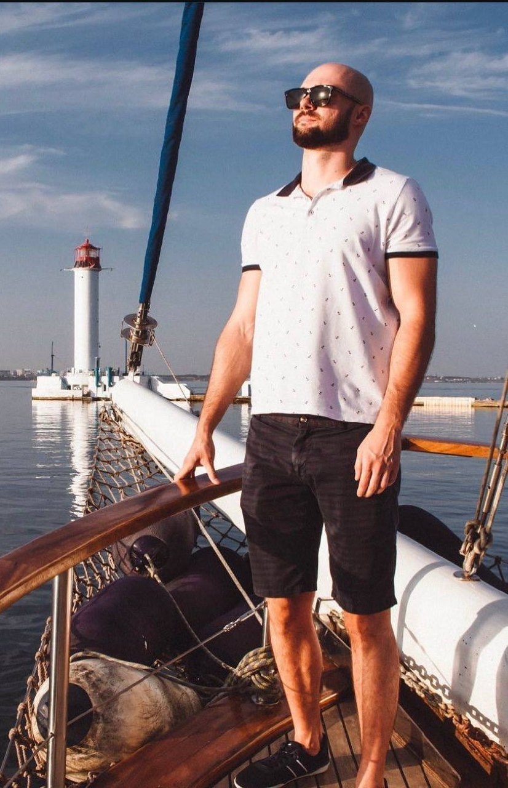
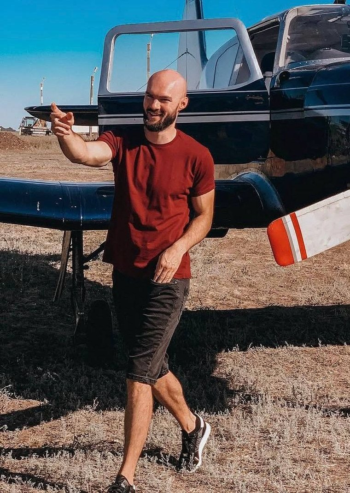
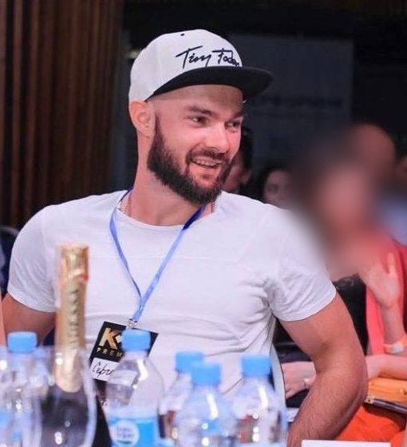
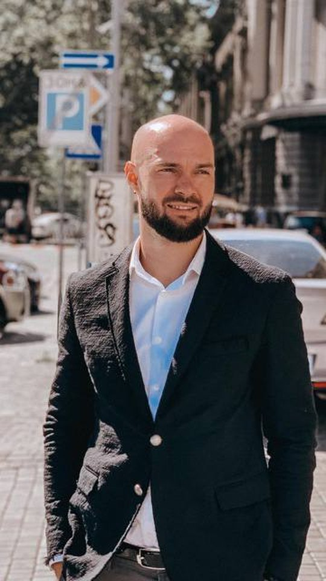
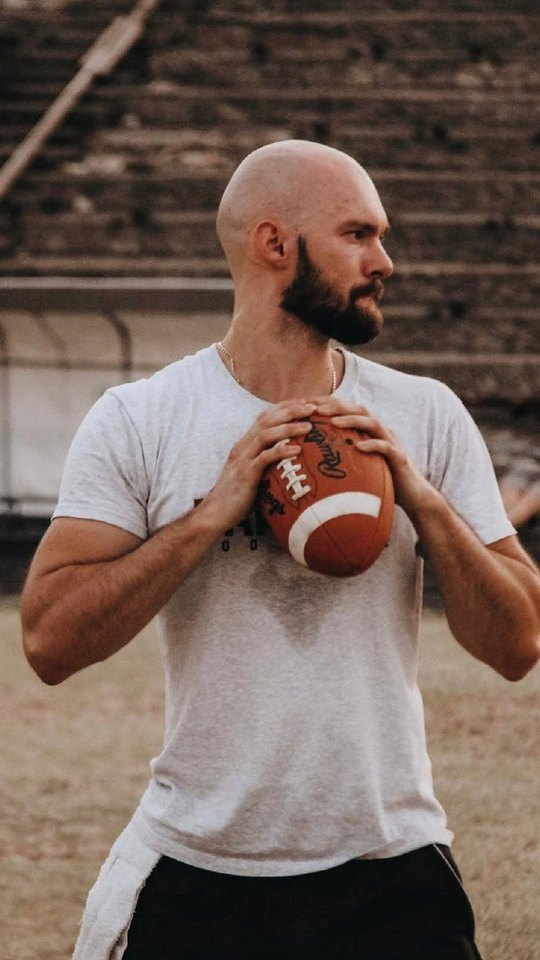
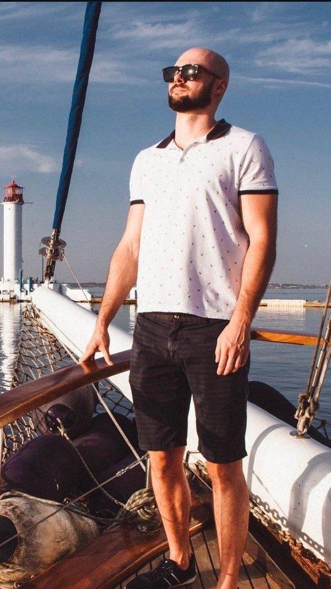

01Компания работала. Но прежний подход перестал помогать
Сергей Сорока пришёл на обучение с действующим бизнесом в сфере создания и продвижения сайтов. Компания пережила сложный период, продолжала работать и зарабатывать. Удержаться на плаву было важно, но Сергей понимал: этого уже недостаточно.
Раньше он был прежде всего профильным специалистом. Теперь ему приходилось решать задачи предпринимателя — развивать компанию, работать с командой и выбирать направление движения. Привычных знаний, характера и силы воли для следующего этапа уже не хватало.
Спад в бизнесе он переживал тяжело. В интервью Сергей вспоминает, что мог несколько дней не выходить из дома, стараясь отстраниться от происходящего. Нужен был новый взгляд на ситуацию и на собственную роль в компании.
02Обучение, к которому он пришёл со своими сомнениями
Сергей не описывает знакомство с обучением как мгновенную уверенность, что теперь всё получится. Часть идей он уже встречал раньше. По его словам, Power ON не дал ему сразу огромного скачка именно в бизнесе. Зато помог выйти из затянувшегося внутреннего затишья.
Вспоминая первые впечатления, он рассуждает: если бы подобные знания появились у него раньше, на некоторые этапы развития компании, возможно, ушло бы меньше времени.
Был и другой вопрос: сможет ли тренер, который не работает в его конкретной сфере, подсказать что-то действительно полезное? Позже Сергей отмечал, что получал применимую информацию даже по знакомым ему профессиональным задачам — в том числе по сайту и привлечению клиентов.
03Сначала — другой взгляд на себя
Знакомство с обучением началось с Power ON. Затем Сергей прошёл программу «Код Бизнеса». Когда он говорит о главном изменении, то начинает не с финансовых показателей, а с мышления: изменились его взгляд на жизнь, отношение к людям и ощущение дальнейшего пути.
Для него это было не возвращением к прежнему состоянию. Он описывает появление новых ориентиров и интереса к тому, что ещё можно сделать — в работе и за её пределами.
Практические инструменты программы легли на этот личный сдвиг. Вопрос был уже не только в том, чтобы пережить сложный период, но и в том, как дальше строить компанию.



04Менялся не только бизнес, но и отношения с людьми
Говоря об изменениях, Сергей несколько раз возвращается к своему взгляду на жизнь и отношениям с окружением. Некоторые люди перестали понимать его так, как раньше. При этом он отдельно уточняет: истории о том, что после обучения из компании ушла едва ли не половина сотрудников, у него не было.
Он воспринимал происходящее скорее как естественный отбор по взглядам и направлениям движения: часть людей оставалась рядом, с частью пути расходились. В интервью для него это связано с тем, что он сам начал по-другому смотреть на привычные вещи.
Сергей также не утверждает, что полностью изменил характер. Он продолжал считать себя человеком, склонным к пессимизму, но чувствовал, что оптимизма стало больше. Ему нравилось это более сбалансированное внутреннее состояние. Прогресс был не всегда заметен в отдельный день, однако ощущение движения и роста приносило удовольствие.
05Организационная структура показала, где не хватает людей
Одним из инструментов стала работа над организационной структурой. Сергей не описывает её как решение, которое мгновенно исправило бизнес. Польза оказалась конкретнее: схема помогла ему и руководителю компании увидеть, каких сотрудников не хватает и где один человек выполняет слишком много разных задач.
Это дало основу для дальнейших решений. Структуру можно было соотнести с реальным развитием компании: понять, какую роль потребуется закрыть следующей и почему существующее распределение работы создаёт сложности.
Так отдельное учебное задание стало способом внимательнее посмотреть на повседневную работу команды.
06Попытка внедрить всё сразу привела к перегрузке
Изменения не шли ровно. Примерно в середине обучения Сергей почувствовал перегрузку: новых знаний было много, и хотелось сразу применить организационную структуру, бизнес-процессы и другие инструменты.
Но компания уже работала, в ней были сотрудники со своими привычками и сложившимися отношениями. Быстро перестроить всё не получалось. На этом фоне возникало сомнение: возможно, новые подходы вообще не работают?
Позже Сергей увидел причину в самом темпе внедрения. Изменить мышление и действующую компанию за неделю или месяц невозможно. Вместо попытки охватить всё он выбрал поэтапное движение: обсуждать приоритеты с сотрудниками, планировать и переходить от одной задачи к следующей.
Полезной оказалась и практика выбирать главное дело на день. Её он стал применять в собственном планировании.
Изменить мышление и действующую компанию за неделю или месяц невозможно. Поэтому он перешёл к поэтапному движению.
07Полезно оказалось не всё внедрять первым
Сергей подчёркивает, что даже хороший инструмент нужно соотносить со стадией своего бизнеса. Если в команде всего несколько человек, нельзя автоматически считать подробную оргструктуру более срочной задачей, чем привлечение клиентов. Важно понять, что поможет именно сейчас.
Его собственный опыт был двойственным: нарисованная структура не упростила все процессы сама по себе, но дала понимание перегрузок и следующих нужных ролей. Польза заключалась в том, какие решения можно было принять, увидев картину целиком.
Так же он подбирал планирование под себя. Практика выбирать одно основное дело на день показалась ему удобной и продуктивной. Не требовалось внедрять любую методику целиком — нужно было проверить, как она работает в его реальном дне.
08От рекомендаций — к собственной рекламе
Параллельно Сергей начал менять подход к привлечению клиентов. До этого компания во многом опиралась на рекомендации. Во время обучения он перерабатывал сайт и начал запускать рекламу для собственного бизнеса.
В интервью он уже отмечает первые обращения после запуска рекламы. Также рассказывает о подготовке нового направления контекстной рекламы: раньше часть таких задач решалась через субподряд, теперь он хотел подойти к развитию направления системнее.
На момент записи это были первые шаги, а не завершённая перестройка. Часть решений уже внедрялась, часть ещё находилась в планах. Сергей говорил о перспективах с воодушевлением.



09Новые знания хотелось передавать дальше
В интервью есть ещё один личный эпизод: Сергей рассказывает, как вспоминал полезные идеи в разговорах с другими участниками и делился тем, что сам начал применять. Ему было приятно понимать, что он может помочь другому человеку.
Это добавляло ценность самому обучению. Помимо задач компании, появлялись новые направления, которыми хотелось заниматься, и интерес к дальнейшим действиям. К концу программы он уже с нетерпением ждал возможности заняться следующими бизнес-процессами.
Но этот интерес не отменял пережитой перегрузки. Увлечённость знаниями и попытка применить их одновременно оказались разными вещами. Сергей начал отделять желание изменить многое от реального плана, который команда способна выполнить.
10Главный итог — понимание, как двигаться дальше
В этой истории важны и новые инструменты, и изменение отношения к собственному бизнесу. Сергей стал внимательнее смотреть на ограничения команды, расставлять приоритеты и соотносить новые идеи с тем, что компания действительно может внедрить сейчас.
Он не рассказывает о моментальном решении всех проблем. Напротив, один из его главных выводов — перестать требовать от себя и команды немедленной трансформации. Выбрать направление, разбить работу на этапы и последовательно двигаться вперёд.